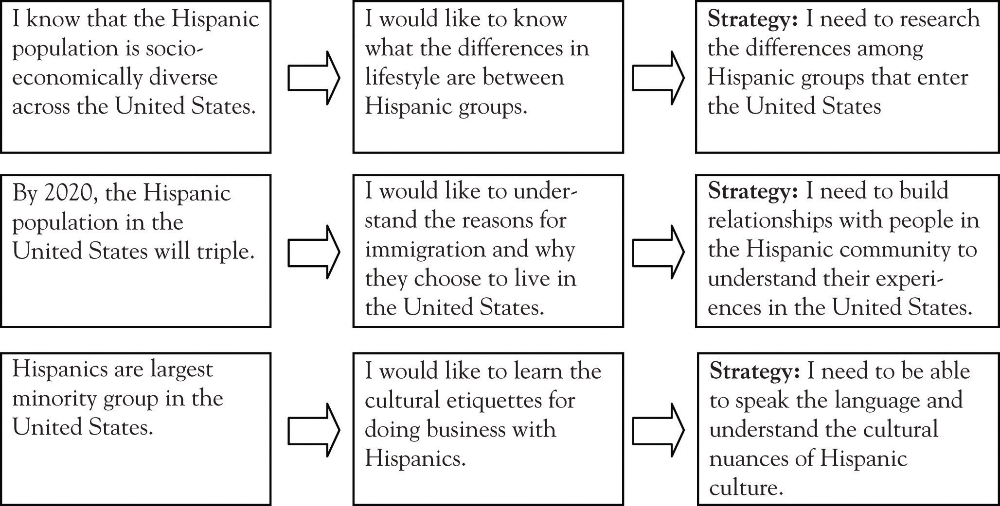

Cultural strategic thinking is your ability to think and solve problems in specific ways when you are in unfamiliar cultural settings. To understand cultural strategic thinking, it is important for you to comprehend the two elements that make up this foundational piece of cultural intelligence: cognition and metacognition.
CognitionThe ability to process information. Related to culture, the complete knowledge and experience an individual gains about cultural situations and the individual’s actions within those situations. is generally thought of as your ability to process information. As related to culture, you can think about it as the complete knowledge and experience you have gained about cultural situations and your interactions within those situations. Additionally, how you have thought or processed this information is stored in your memory. Your ability to retrieve this stored information is defined as cognitive ability.
For example, I was conducting a workshop on cultural intelligence for educators, and one of the senior managers raised a question about proper etiquette in Southeast Asian cultures, particularly Lao and Hmong, that were present in her school district. She said, “I heard from one of my colleagues that it’s considered rude if you touched or patted a child’s head; that it’s sacred. I tell my staff never to do this. Am I telling them the right cultural information?”
I replied that, yes, in some Southeast Asian cultures, touching or patting someone on the head is considered rude. “But, you have to realize that cultural information may not be true for every Southeast Asian child or parent you meet. Your awareness of this fact and your experiences related to this fact is a good thing to recall, but what if your new situation doesn’t fit into your past experiences and what you know? What do you do?”
What I pointed out to her was that her awareness of this cultural fact was not enough. Earley and PetersonEarley & Peterson (2004), p. 104. stated that providing training in specific cognitive knowledge for multiple cultures is impractical. What is critical is equipping a manager with metacognitive skills so that, with time and experience, he or she can acquire new information concerning the cultural issues present in his or her team. With cultural intelligence, when the information you have does not fit a new situation, you have to be able to take in new information and reformulate it. Given this new information, you need to be flexible enough to reorganize how you think about the situation and the cultural fact(s) you have stored in your memory.
Throughout my educational and consulting sessions, I meet with people who are most concerned about “getting cultural facts and information correct.” By this I mean they are interested in “what they can and can’t do,” or “making sure they act within the boundaries of proper behaviors.” Some even want a “10 commandments of cultural etiquette.” As a result, most people end up with cultural facts and information that help them understand the culture, but not the ability to work with, and adapt to, the culture.
The reality is, when you are working on a multinational team or supervising and leading a multinational staff, you need to have a higher level of thinking (cognition). This is where cultural strategic thinking really matters and where metacognition becomes important.
MetacognitionThe knowledge an individual has about his or her own cognitive processes. Generally referred to as “thinking about thinking.” refers to “thinking about thinking” and was introduced as a concept in by John Flavell, who is typically seen as a founding scholar of the field. Flavell said that metacognition is the knowledge you have of your own cognitive processes (your thinking).Flavell (1979). It is your ability to control your thinking processes through various strategies, such as organizing, monitoring, and adapting. Additionally, it is your ability to reflect upon the tasks or processes you undertake and to select and utilize the appropriate strategies necessary in your intercultural interactions.
Metacognition is considered a critical component of successful learning. It involves self-regulation and self-reflection of strengths, weaknesses, and the types of strategies you create. It is a necessary foundation in culturally intelligent leadership because it underlines how you think through a problem or situation and the strategies you create to address the situation or problem.
Many people become accustomed to having trainers and consultants provide them with knowledge about cultures to the point where they are dependent on the coach, mentor, trainer, or consultant. However, they need to learn to be experts in cultural situations themselves through metacognitive strategies such as adapting, monitoring, self-regulation, and self-reflection. Culturally intelligent leaders can use metacognition to help themselves and to train themselves to think through their thinking.
Metacognition is broken down into three components: metacognitive knowledge, metacognitive experience, and metacognitive strategies. Each of these is discussed in the following sections.
Metacognitive knowledgeSelf-awareness about knowledge that involves three aspects: learning processes and beliefs about learning, the task of learning and how information is processed, and strategies for learning and when they will be used. involves (a) learning processes and your beliefs about how you learn and how you think others learn, (b) the task of learning and how you process information, and (c) the strategies you develop and when you will use them. Let us say you have to learn a new language in 6 months. Here is how you would think about it, using metacognitive knowledge:
Task of Learning: To complete this task, I will need to think about the following:
Arnold Bennett, a British writer, said that one cannot have knowledge without having emotions.Bennett (1933). In metacognition, there are feelings and emotions present that are related to the goals and tasks of learning. These components of metacognition speaks to metacognitive experienceAn individual’s emotional response to learning, both in terms of progress made and the connection of new information to previous knowledge., which is your internal response to learning. Your feelings and emotions serve as a feedback system to help you understand your progress and expectations, and your comprehension and connection of new information to the old, among other things.
When you learn a new language, for example, you may recall memories, information, and earlier experiences in your life to help you solve the task of learning a new language. In doing this, your internal responses (metacognitive experience) could be frustration, disappointment, happiness, or satisfaction. Each of these internal responses can affect the task of learning a new language and determine your willingness to continue. Critical to metacognition is the ability to deliberately foster a positive attitude and positive feelings toward your learning.
Metacognitive strategiesThe methods an individual uses to monitor his or her progress related to learning and present activities. are what you design to monitor your progress related to your learning and the tasks at hand. It is a mechanism for controlling your thinking activities and to ensure you are meeting your goals. Metacognitive strategies for learning a new language can include the following:
As one business manager of a Fortune 300 company told me,
Understanding cultural strategic thinking is like this: When I work with people of different cultures, this is a framework and approach to help me understand how I think when I work with them. It helps me to recognize the cultural experiences I’ve had, and to identify preconceived notions I might have about their culture, whether it’s race/ethnicity, social culture, age group—you name it. Cultural strategic thinking forces me to create experiences and new learning that helps me to accomplish my objectives as a global manager.G. Menefee (personal communication, May 12, 2010).
Individuals like this leader are good at applying strategies that focus their attention on the goal at hand. They search for, and derive meaning from, cultural interactions and situations, and they adapt themselves to the situation when things do not pan out as they expected. Culturally intelligent leaders also monitor and direct their own learning processes. They have established a high motivation for learning the metacognitive process, either because they know it is a benefit or because others tell them it is beneficial to them.
Knowledge of factual information and basic skills provides a foundation for developing metacognition. Metacognition enables leaders to master information and solve problems more easily. When a leader has mastered the basic skills needed for intercultural interactions, they can actively engage in the interaction because they do not have to pay attention to the other dynamics and demands of the situation. Culturally intelligent leaders are able to practice metacognition, and they are not afraid to use it in their everyday life.
For those who lack basic intercultural skills, it is more difficult for them to engage in the interaction. They are more occupied with finding the “right information,” the “right skills,” and the “right facts” needed to solve the problem. In such situations, these types of leaders spend little time developing their metacognitive skills, and the result is likely an inefficient solution to a problem. Developing a laundry list or checklist of do’s and don’ts will not assist leaders in improving their cultural intelligence.
How can you improve your strategic thinkingReasoning related to creating strategies in line with the business and competitive goals of an individual or an organization in a global environment.? Basic strategies for improving thinking include (a) connecting new information with what you already know, (b) selecting your thinking strategies carefully and intentionally, and (c) planning, monitoring, and evaluating your thinking strategies and processes.
Strategic thinking is “thinking about thinking.” It is being conscious of your thinking processes, such as how you have gathered and organized the information and experience in your memory (old information), and then how you reorganize it (new information) to fit a new situation. You have to connect the new information to what you already know in order to help make sense of what actions to take. You can do this by identifying what you know and what you do not know about a cultural situation. Here is an exercise to help you identify old and new information. Take a sheet a paper and draw a line down the middle of the sheet to create two columns. At the top of the left column, write, “What I know,” and at the top of the right column, write, “What I want to learn.” As you research, explore, and interact with a cultural situation, people, or information, you will learn to clarify, revise, verify, or expand your understanding of the situation.
Let us look at the example of Betsy, who is a product manager for a local distributor of processed foods and snacks. With a growing Hispanic population that has an increasingly large purchasing power in the United States, her company wants to expand into the market and seize on this opportunity and potential for growth. This is not a new market for the business, but it requires that her team think strategically about what they know and do not know about this consumer base.
Table 4.1 Identification of Knowledge Gaps
| What I Know | What I Want to Learn |
|---|---|
| Between the years 1991–2013, the projected growth of Hispanic purchasing power is 560%. | Differences in lifestyles among Hispanic groups. |
| Hispanics are the largest minority group in the United States. | Reasons for immigration or coming to the United States. |
| By 2020, the U.S. Hispanic population will triple. | Cultural etiquette in doing business with Hispanics. |
| Family is central to Hispanic communities. | History of Hispanic culture in the United States. |
| A large percentage of Hispanic families are from low-income families. |
Next, Betty and her team will need identify the strategies that will help them to be more intentional with their work.
Based on this exercise, Betty has identified strategies that will connect new information to the old in the following ways:
Figure 4.1 Creating Intentional Strategies
By connecting old information with the new, Betty is making conscious choices and decisions about what she knows and what she does not know. This sets her up with strategies that are most appropriate for her. Strategic thinking is most useful when you find strategies that work appropriately for your level of knowledge, building upon what you know. As indicated earlier in the chapter, if this new knowledge is basic information and Betty does not have this, she can be easily distracted, which may create interruptions in her learning and practice of strategic thinking.
As Betty collects information related to her actions, she will add or revise her strategies, as needed, because her knowledge base has grown and what was “new information” at one time is now old information. Betty will put in place strategies that help her to monitor her progress toward her goal as well as to evaluate how she thinks about each strategy. Because the information is new to her, and if the information is basic knowledge that she needs, she will need to pay attention to her mind’s ability to be easily distracted. When she is aware of this, she can retrain her brain to identify the distraction and then refocus on her goals. There are a variety of strategies she can use to plan, monitor, and evaluate her progress.
One strategy Betty has employed is to create the time and space with her team to discuss her cultural experiences. This allows her to process, out loud, the knowledge she has obtained and forces her to think about her thinking, that is, her metacognition. Because she puts this strategy in place, she can understand what her mind is processing during her learning, and she is then able to identify and focus on her strengths and improve upon her weaknesses. When she does this with a group, her peers help her to learn about her thinking while she helps them to learn about their learning processes.
The basics of developing and practicing cultural strategic thinking are to (a) connect new information to the old, (b) select the appropriate strategies, and then (c) plan, monitor, and evaluate the strategies you have put in place. This section of the chapter provides ideas that will help you to increase your cultural strategic thinking.
A strategy that is often employed in the practice of cultural strategic thinking is to create peer-learningWorking with peers to question and explore cultural interactions to resolve cultural problems. opportunities to explore cultural interactions and resolve cultural problems. Doing this provides you with a language for how you process cultural interactions and problems, and your peers can help you to create that language and help solve the problems. As a leader, this is a great way of providing a model for those who have difficulty with cultural strategic thinking. It does so by sharing with them a language and a process, and by helping to point out the cultural strategic thinking pieces of the process, which can be done by asking and clarifying the situation for them. Think about it as playing cultural detective: You ask your peers questions, and they clarify the information for you, and when they ask you questions, you clarify your thinking process for them.
A useful tool I have used in my workshops and classes is writing down experiences and thoughts related to a cultural situation. I encourage you to write down your emotions and feelings, the ambiguities and inconsistencies, and the challenges and successes of working interculturally. Your writing serves as a reflection of your thinking processes and how you have dealt with, or how you could not deal with, the process. It also serves as a memory of your experiences, which you can later refer back to and learn from.
In gaining cultural knowledge, it is very helpful to get into the habit of checking your facts and knowledge about a culture. You can do this by using multiple sources and venues. If you come across a situation in which a cultural fact seems to contradict what you know, take the time to learn about the difference and the nuances related to that cultural fact. Using that cultural situation as a “Kodak moment,” take the opportunity to reread the picture to see if you really understood how that cultural fact was used. In your review of the situation, you may need to research unfamiliar terms or gestures used, or you may need to break down the picture and rebuild it, step by step, to understand if you really understood the whole picture.
Essential in cultural strategic thinking is your ability to conjure and be positive about your learning experiences. Someone who holds a negative perspective about, or who had a negative experience, working with different cultural groups will continue to have difficulty working with the groups. Negative attitudes and impressions will hinder your work. You have to think positively about a situation, and you need to be and stay positive, maintaining a positive energy and attitude throughout. I have certainly come across leaders who have attended my sessions because “leadership told them they had to,” and it affects their learning environment in a negative way and often interrupts the learning of their peers. Your ability to be a culturally intelligent leader depends on your willingness to maintain a positive attitude.
Along the lines of processing your cultural situations out loud, it would be helpful to find a coach or mentor that can help you analyze your thinking. In cultural strategic thinking, it is important to talk about what you will do or what you have to do. Some people will talk to themselves; others find it helpful to have someone to talk to. As in peer learning, talking to someone else gives you the opportunity to break down your thinking processes.
One of the best things to do in developing cultural strategic thinking is to learn to be an observer. Through observation and active listening, you pick up what you normally do not see. Observation is acquired through day-to-day activities in your life by making a conscious decision to be open and alert. Pay attention to the verbal and nonverbal cues of various situations; look around your environment and note the various symbols and artifacts. Culturally intelligent leaders must have excellent observation skills, never failing to hear and see the tangible and intangible. You can do this by reminding yourself or by setting goals centered around the following actions:
Active listeningThe ability of an individual to understand, interpret, reflect on, and respond to what that individual just heard. is your ability to understand, interpret, reflect, and respond to what you have heard. It is a critical skill in cultural intelligence because the behavior acknowledges that you have really heard what another person has said. Active listening focuses your mind on the speaker, and, if done repeatedly and successfully, you are able to build trust and a relationship with others. It can facilitate an effective cultural interaction with less conflict, confusion, and frustration. Practicing to be an active listener is making a conscious choice about your responses to others. Because cultural intelligence is intentional, you are also better able to regulate your emotions and feelings.
Marilee AdamsAdams (2004). proposes that when you change your questions in any given situation, this allows you to change your thinking. There are two types of questions: questions that involve judgments and questions that involve learning. We ask both types of questions, and we choose which ones to ask in any given situation. Asking questions in a different way provides us with another perspective.
Table 4.2 Judger vs. Learner Questions
| Judger | Learner |
|---|---|
| What’s wrong? | What works? |
| Who’s to blame? | What am I responsible for? |
| How can I prove I’m right? | What are the facts? |
| How can I protect my turf? | What’s the big picture? |
| How can I be in control? | What are my choices? |
| How could I lose? | What’s useful about this? |
| How could I get hurt? | What can I learn? |
| Why is that person so clueless and frustrating? | What is the other person feeling, needing, and wanting? |
| Why bother? | What’s possible? |
Note. Adapted from Marilee G. Adams, 2004, Change your questions, change your life: 7 powerful tools for life and work, San Francisco, CA: Berrett-Koehler, p. 49.
Cultural strategic thinking may seem overwhelming at first, but as with any new learning, you need to break your plan into smaller steps that will help you to accomplish your goals. When you get into the habit of cultural strategic thinking, you will begin thinking on an unconscious level and not even recognize that you are using strategic thinking. You will notice it when others marvel or comment at your ability to effectively manage cultural interactions.
Earley and PetersonEarley & Peterson (2004). wrote that learning about a new culture requires putting all the pieces of a pattern together when you do not know the totality of what that whole picture should look like. Cultural strategic thinking is essential because it is this higher strategic thinking that enables you to process the new information and reinterpret it in a new situation. Cultural strategic thinking helps you to discard what you think you know and to apply new information concerning what the situation could be. By training your mind to think at a higher level, you create new maps of cultural situations, which help you to function more effectively.